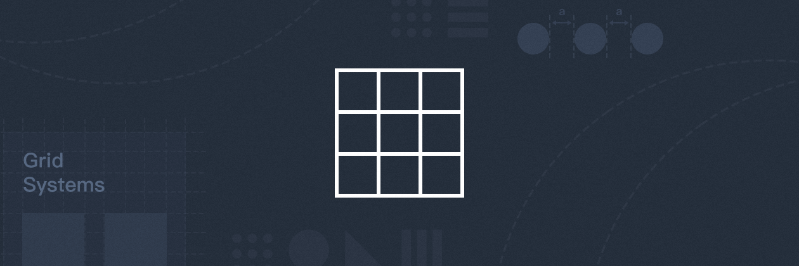
MakicLin
10月13日
第六章：世界都在用的排版系统
| 本文为付费栏目文章，您已订阅，可阅读全文 |
欢迎回来
从第二章到现在，我们已经讲了如何区分中英文字体，如何选择字体以及如何配色。本章开始，我们将进入本教程平面设计知识（字体，配色，排版）中最后一个方面：「排版」。
排版即是设计知识的最后一方面，又是之前所有知识的集合点，我们之前学习的内容将在这里交汇，并共同发挥作用，让你也能做出一个优秀的版面。
什么是排版？
我听过平面设计师这样定义排版：「排版是什么？就是把页面上的东西挪来挪去直到满意，排版就完成了。」
正经来说，排版就是在固定版面内，排版摆置各种不同型态的资料，如数字、文字、表格、图形和影像等等，以最合适的方法呈现。印刷品中的版面安排，网页文案的编排，若要引人注意和阅读上的舒适，皆应留意排版方面的问题。
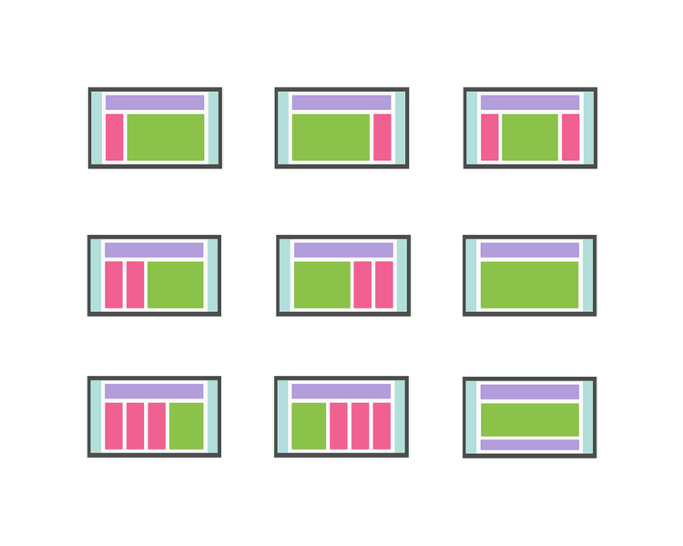
版面上的元素组合
简单理解，排版就是归纳页面上的元素。早几年前，「排版」一词还只是出版社和报社的专利。报社中会有专门负责排版的职位，他们分配文章所属的版面，然后把文章分成小块，一个个摆好。由于设计工具逐渐由传统的手绘工具转为了电脑，加上互联网的普及，让屏幕上的每个页面都充斥着排版，排版便无处不在。比如微信公众号排版也成了一门学问。
排版的目的
在了解排版的目的之前，我们先来认识一下这两位「烧烤王」，即使都很接地气，但他们给你的感觉是不一样的。
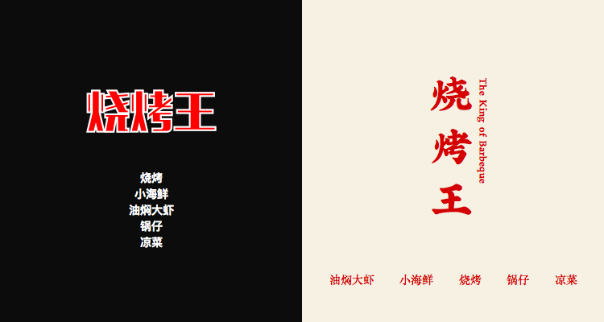
两位「烧烤王」
左边这位烧烤王应该是位年轻的师傅，右边给人的感觉则有一种老字号的感觉。没错，仅仅通过文字的字体，颜色以及元素的位置就可以控制读者对内容的理解了。
所以，排版的目的是控制读者，或者说设计一个圈套，让读者不由自主地得到你想传达的信息。为什么左边的烧烤王能够让你觉得是位年轻师傅呢？是因为其黑色背景，有张力的字体，甚至是不太考究的文字居中造成的。而右边的烧烤王为什么是老字号呢？是因为其招牌使用了有书法气息的字体，而主打菜品使用了衬线字体，加之纵向的文字摆放（通常纵向文字会有年代感，因为现代阅读通常是横向阅读）， 造就了老字号的感觉。招牌旁边的英文甚至会让你感觉这是一家开在国外唐人街的烧烤店。
可以看出，每一个排版的决定（字体，颜色，位置）都可以传达一种特定信息，所以只要排版遇到问题，永远记得「排版是为内容服务的」，你想传达什么内容，就要做出相对的排版决策。
网格设计系统（Grid system）
说了这么多，该请出我们本章的重要人物了。首先请观察下面两张图，分别是 Flipboard 的首页和一张海报，你有没有看到一些端倪？
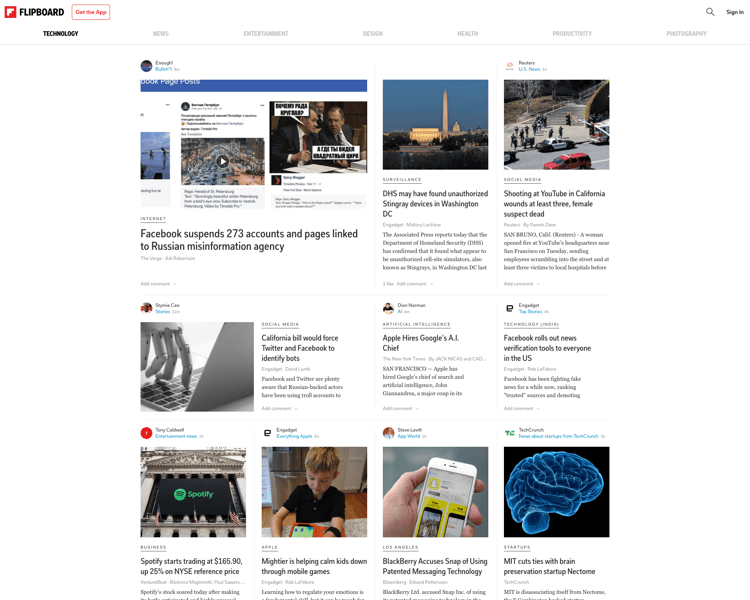
Flipboard 网站
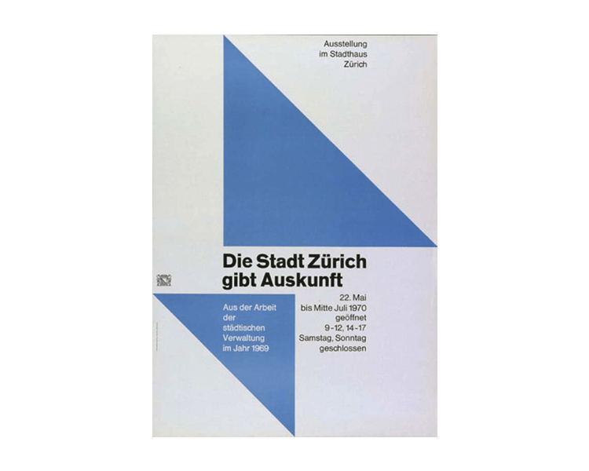
设计师 Richard P Lohse 的海报
你可能会感觉到上面的网页和海报都很有秩序感，或者说有一个隐形的尺子在背后约束着所有元素的位置。即使一个是网站，一个是海报，实际上他们都使用了同一种设计方法——网格设计系统。
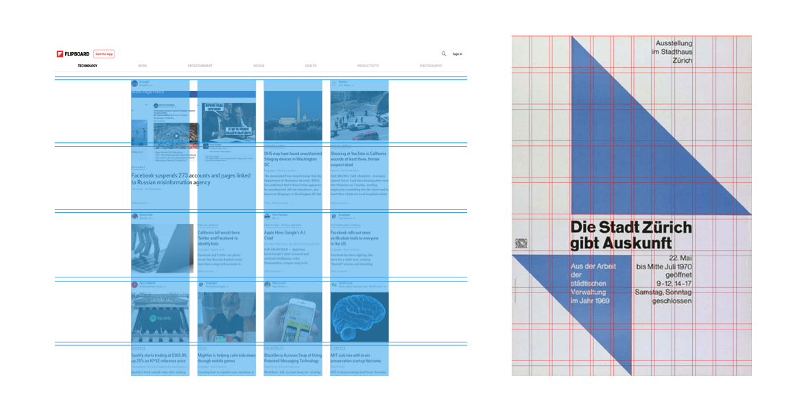
Flipboard 网站的网格系统
网格设计系统（又称栅格设计系统）是一种由瑞士平面设计风格（International Typographic Style）时代风靡起来的平面设计方法，一直沿用至今。
其执行方法是将页面划分成若干格子，如同把页面变成了「收纳箱」。然后再将页面上的所有元素都严格遵循格子的位置摆放进去。
网格设计系统的学习和执行都比较简单，它可以给页面上每个元素的位置赋予意义，而不是没有理由的摆放。当然，好的排版不一定都使用网格设计系统，但网格设计系统是我们提高排版质量的捷径。随手拿起一本书，几乎都是使用网格设计系统进行排版设计。在网页设计和 UI 设计领域，网格设计系统的运用则更加广泛。
接下来，某位设计师为我们的专栏设计一页排版，我们将分析并重构这个排版，过程中我们会讲解网格设计系统以及其具体应用。我们先来看一下结果：
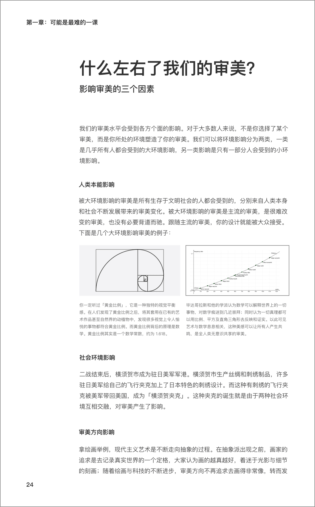
为专栏设计的一页排版
我们将会把使用网格系统分为三个步骤：
- 建立网格系统（构建大框架）
- 摆放元素（具体执行）
- 文字排版（细节修改）
使用网格系统的三个步骤
1. 首先，建立一个网格
页面排版的第一步，是确定一个网格系统，作为摆放元素以及文字排版的基础。要建立一个网格系统，可以分为两个步骤：确定页边距和确定内部构造。
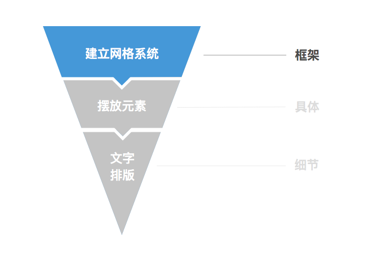
第一步，建立网格系统
1) 确定页边距（Margin）
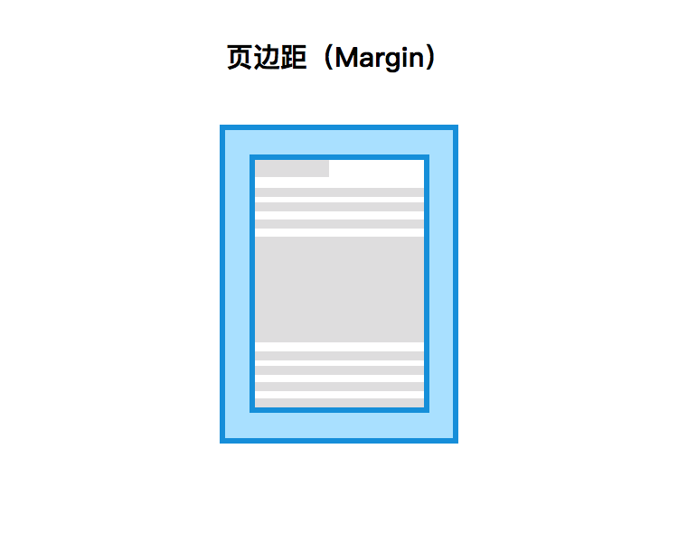
页边距（Margin）
页边距是指页面四周留白的部分。上下左右四个方向的页边距会在页面上形成一个框，框内是页面的「安全区域」。对于电子设备情况也类似，只不过由于纵向滚动是电子设备的主要交互方式，所以左右两边的页边距远重要于上下页边距。
页面上四边的页边距不一定相等。四边相等的页边距可以让页面看起来更加平衡协调；而不相等的页边距会让页面的视觉焦点向某一点偏移，进而让页面更有不对称的视觉张力，也更能够吸引观众的注意力， 对于需要手持的设计作品（比如书本、杂志、iPad 应用）则腾出更多用手握持的空间。四个页边距不等的做法在正常尺寸的印刷制品、电脑网页中更为常见，而在尺寸较小的手机屏幕上则很难发挥出来。
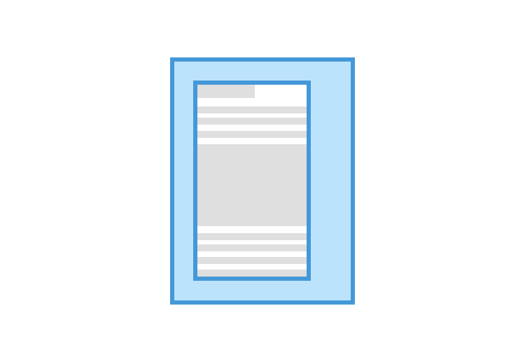
不对称的页边距
严格来讲，安全区域之外是不允许放置内容的。但页码，页脚以及主要部分在安全区域内的图片是可以放在安全区域外的。
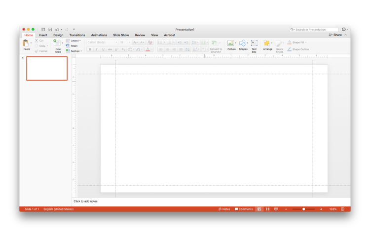
用 PPT 的辅助线划分页边距
怎么才能把页边距画出来呢？在专业级的软件中，比如 Adobe InDesign 会有完善的网格系统创建方式；对于 PPT 之类的非专业排版软件你也可以使用辅助线或画矩形的方法简单画一些格子出来；对于元素不多的页面（比如一页只有一个元素的幻灯片）你可以通过简单的目测确定格子位置。当然，网格系统在设计之初就是为了让人严格遵守的，这里「目测」的办法只是提供一种低成本的遵守网格系统的方式，强调的是使用网格系统进行排版的理念。
标准的页边距为 1 英寸，约为 2.5cm。更大的页边距能够让页面显得更加庄重，视觉焦点也比较集中；较小的页边距可以给内容腾出更多的空间，承载更多的内容。对于移动设备，则要取决于屏幕的大小，又由于现在屏幕尺寸多种多样，所以没有一个完全标准的答案。
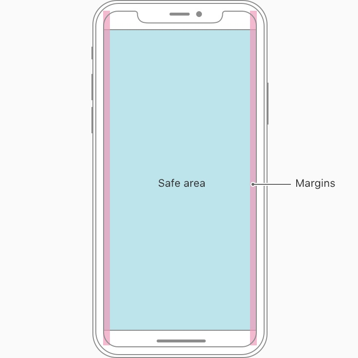
iPhone X 的界面页边距
在苹果的 Human Interface Guideline 中，在屏幕逻辑宽度为 375px 的情况下，默认的页边距为左右各 16px 逻辑宽度。（逻辑分辨率是相对于物理分辨率的概念，是指在应用设计和开发过程中使用的尺寸，手机会根据逻辑像素等比放大后得到物理分辨率显示在屏幕上。比如 iPhone8 的逻辑分辨率为 375 x 667px；放大两倍后是 750 x 1334px，恰好是 iPhone 8 的物理分辨率。）
在我们的专栏页面设计中，设计者创建了一个四边相等页边距，这样的页边距设置显得页面更加均衡。
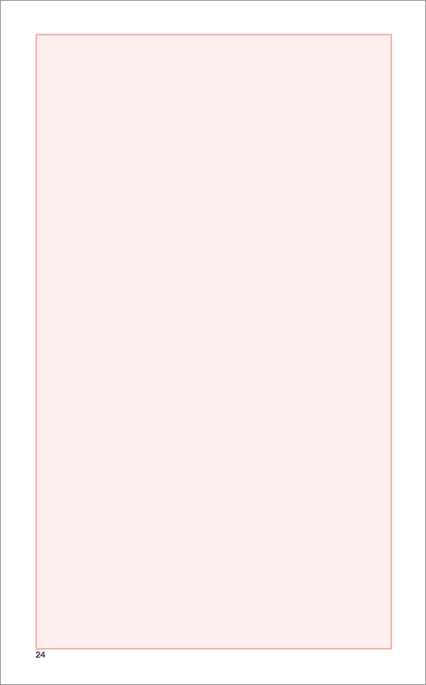
均等的页边距
2) 确定内部构造：栏（Column）与行（Row）
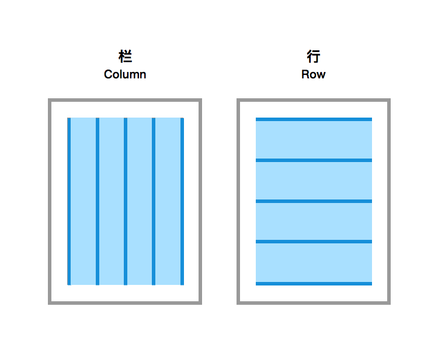
内部构造：栏与行
在网格系统外框确定的基础上，就可以进入第二步——确定内部构造了。以网格系统外框为边界，在外框内部分别建立距离相等的若干纵向线段与水平线段，便能得出内部构造。其中，纵向的线形成的空间称为「栏」，横向线形成的空间成为「行」。
栏的数量会影响到页面元素水平方向的位置。由于元素可以跨栏摆放，所以设置奇数数量的栏（比如 3，5，7 栏）会让一些元素不得不跨奇数栏摆放，这样可以给版面带来更多不规律的可能；而偶数栏（比如 4，6，12 栏）的摆放则不会出现元素跨奇数栏摆放的状况，可以让版面更加有秩序。在此基础上，更多的栏可以给你更多的自由度（比如一个元素可以单居一栏，也可以跨栏）。
行是安全区内水平方向的网格，行的数量会影响到页面元素竖直方向的位置。由于我们的阅读顺序是从左到右，从上到下的，我们的文字和图片很少会像豆腐块一样刚刚好卡在行中；电子设备的纵向空间是无限的，如果严格遵循行的高度，看上去一定是卡片式的设计，这里并不是批判卡片式设计，只是说大家一定不想被迫成为卡片式的设计吧。所以内部结构行的设定远没有栏重要。
了解行与栏之后，要知道行与行，栏与栏之间不是紧紧贴合的，他们需要一定的间距。
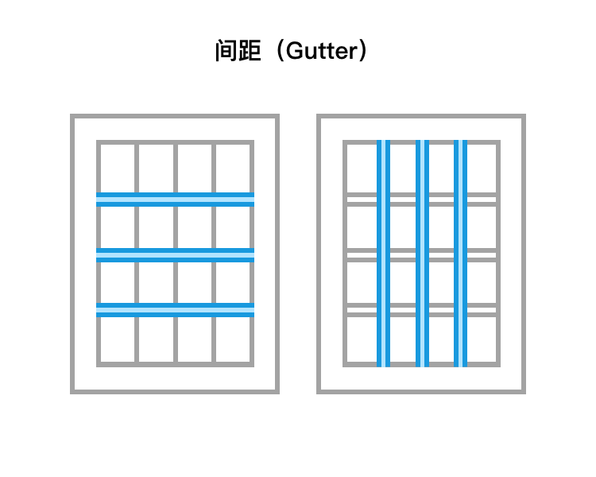
内部构造：间距
通常间距（Gutter）是略大于行距（Leading，每行字之间的距离）的，以确保读者视线需要换行时是向下阅读而不是继续向右误读另一栏中的内容。比如字体为 8pt，行距为 10pt，栏间距则可设置为 10pt 到 12pt。
在我们的专栏排版页面中，设计者制定了一个五栏，十四行的网格。由于五栏的设置。一些元素不得不跨三栏或是留出一个空栏出来，这样会让页面更有张力。
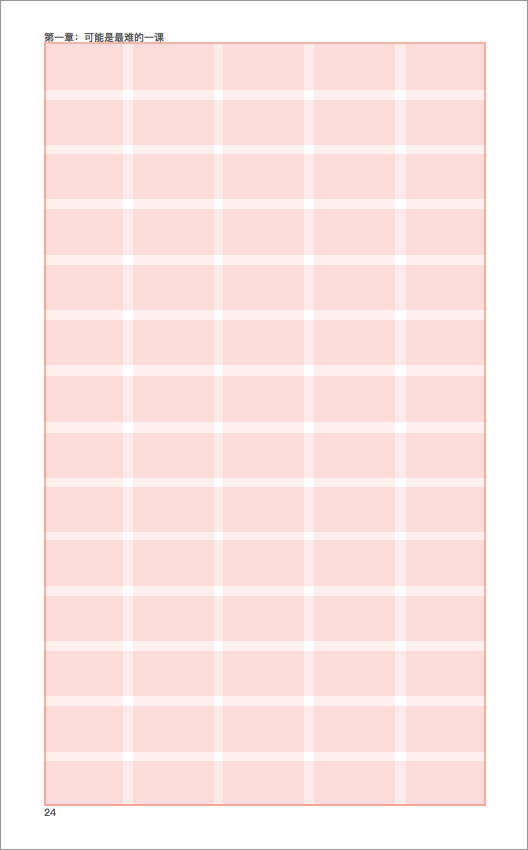
建立网格系统
网格系统是用来约束元素位置的，但它不应该和元素进行对抗。一切网格设定都是可以不断改变的，如果你在接下来的排版过程中发现「这个网格碍到我的事了，设计得不科学」，改变设定好的网格的设置是完全可行的，你可以增加和缩小页边距、增减栏数和行数、改变间距。专业的设计师也会在设计过程中不断调整和改变网格系统的设置。
设置好栏、行和间距，网格系统就建立完成了。接下来，就是往网格中摆放元素了。
2. 然后，往网格中摆放元素
你会感到前所未有的游刃有余，因为有了网格系统作为底线，无论你如何摆放，都不会丑。不过，即使有这样的底线支撑，网格系统内的元素摆放，也是有原因的。下面我们就进入使用网格设计系统排版的下一步——摆放元素。
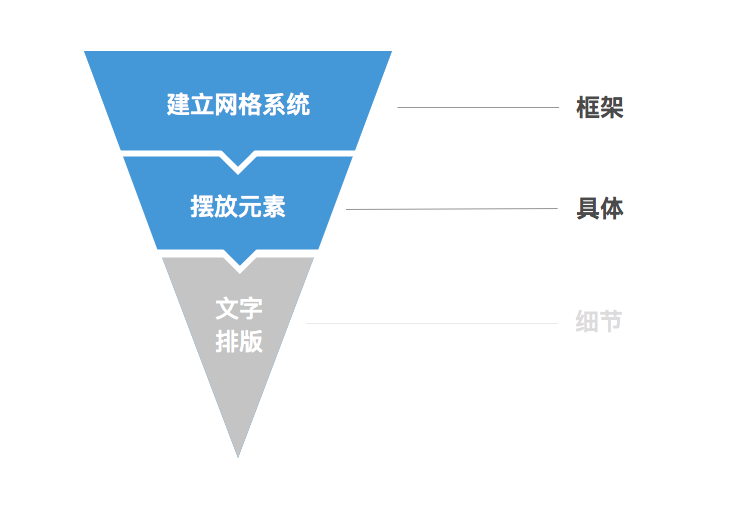
第二步，摆放元素
1) 将页面元素理解为矩形
排版是摆东西的艺术，在这一步，我们可以将文字和图片都抽象理解成不同大小不同比例的矩形。只排列和变换这些矩形，会让事情变容易很多。
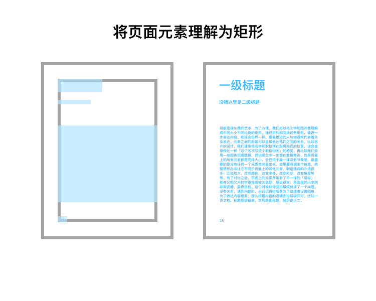
将页面元素理解为矩形
如果将我们专栏的页面设计理解为矩形，它将会是这样的：
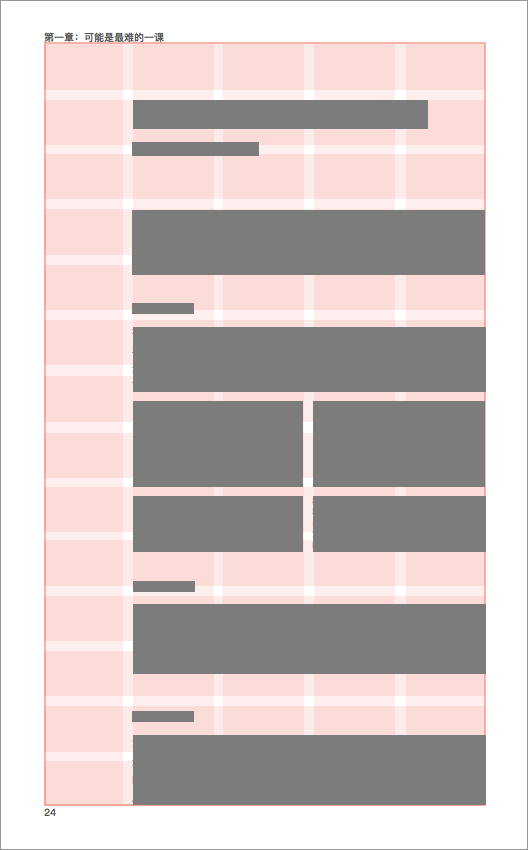
将元素理解为矩形进行排版
需要特殊强调的是，新手设计师经常为了能够盛下更多内容，忽略留白的重要性。使用眼睛获取信息虽然轻松，但也是一种脑加眼的运动，阅读者的视线是需要休息的。而且过于饱和的页面会给读者很难阅读的感觉，比如学术文章的排版很少有大面积留白。
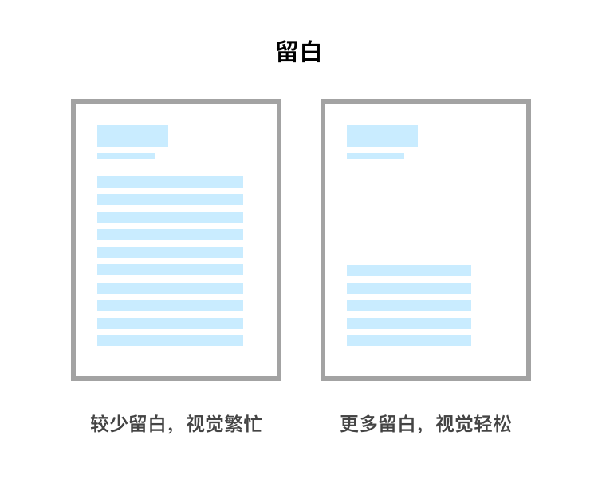
留白
留白除了让视线休息之外，还有增强页面层级感的作用。著名日本设计师原研哉就非常擅长使用大面积留白创造「视觉休息区」。
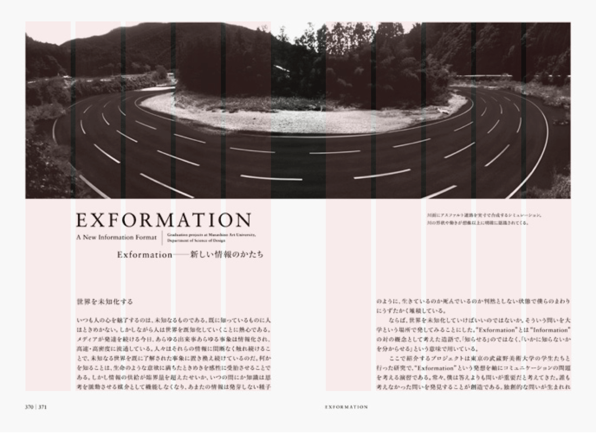
大面积留白打造的轻松阅读体验
2) 距离：决定关系的手法
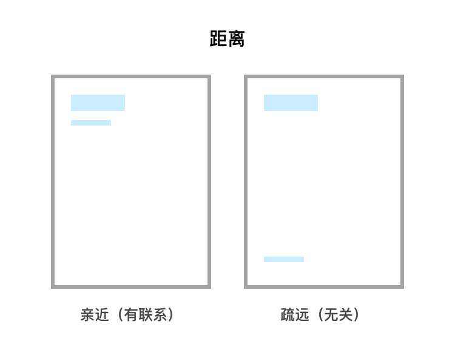
距离
页面元素的距离关系和人类世界一样，关系亲近的人的「安全社交距离」会更近，而关系疏远的人则会保持一定距离。页面上元素之间的距离可以直接表达他们之间的关系：所以排版时关联较大的文字会摆的近一些（比如主标题副标题），而无关的元素就摆的远远的（比如标题与页码）。
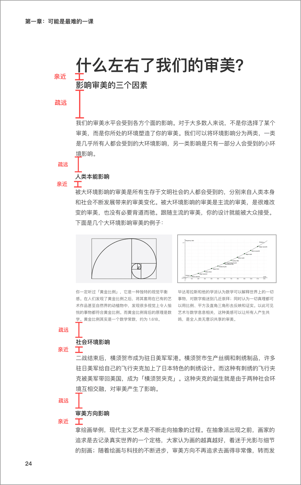
使用距离关系构造层级
在我们的例子中，标题与正文的大距离清晰的传达出两者之间的区别。另外，小节之间的距离较大，而小节内部元素见的距离较小，读者能够清楚的知道哪段文字属于哪个章节，文章的结构也随之清晰。
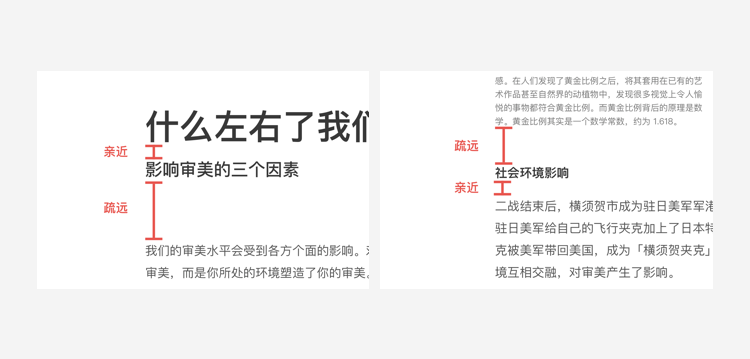
标题与段落（左），段落与分节（右）的距离关系
3) 层级：构造逻辑的手法
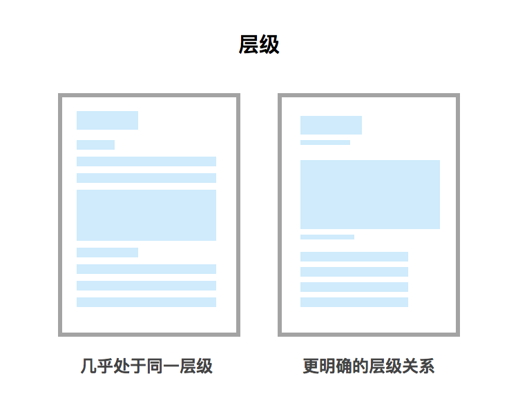
层级
每个元素发挥的作用都是不同的，有些是叙述性的文字，有些是用来解释的图片，有些甚至是用来解释图片的注释。只有有了层级，才能显出每个元素的功能。就比如天安门广场上的升旗队伍，由于身高整齐，我们对他们的身高到底是多少完全没有感觉，实际上他们的身高都在一米八以上。当然，国旗护卫队是为了统一的美感，而排版则需要借助层级为读者构建逻辑关系。
身高统一，处于同一层级
对于页面中的元素，那些又粗又大的字更容易被注意到，层级很高；角落里的小字则非常安静，层级很低。这个时候如何安排层级就成了一个问题。没有关系，遇到问题时，永远记得排版是为了表达内容服务。根据内容的逻辑安排层级即可。比如一页文档，标题层级最高，然后是副标题，随后是正文。
读者的视线非常容易被这些层级影响，如果层级设置足够清晰，则可以让读者的视线从最高级到最低级浏览，从而控制读者的阅读顺序。
在我们的例子中，设计者使用字号，字重，距离关系的设置完成了层级构造。标题最大最粗，副标题虽然小了很多但相比正文仍然声量很大，层级较高。正文中的小节标题虽然字号和正文相同，但较粗的字重可以让它一眼就被看见，加上与段落间存在可观的距离，不会和正文混为一谈。
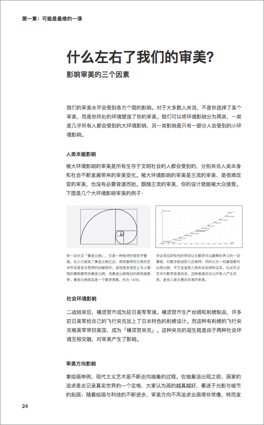
使用字号、字重关系构造层级
而且举例下方的解释文字明显是要小于正文的，这样的字号区分让解释文字的层级又在正文之下，可以传达「这里不是正文，而且没有正文重要」的意思。一来可以加快读者对文章的理解，二来对于了解相关内容的读者有了选择性跳过的机会，进而加快阅读速度。
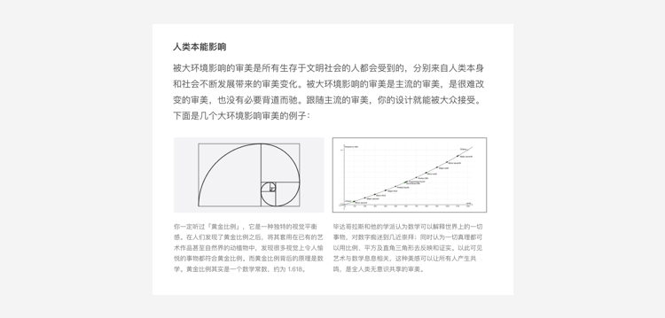
解释文字字号小，于正文区分开
4) 一致：统一视觉语言
最后一点是保持一致，如同配色方案，只有保持一致才能让人觉得你们是一伙儿的。比较简单的办法是沿用网格系统，比如在第一页我们将一张图片放在了网格左上角，那么在下一页同样的位置，也放一张图片或者一段文字，这就达成了网格上面的统一。
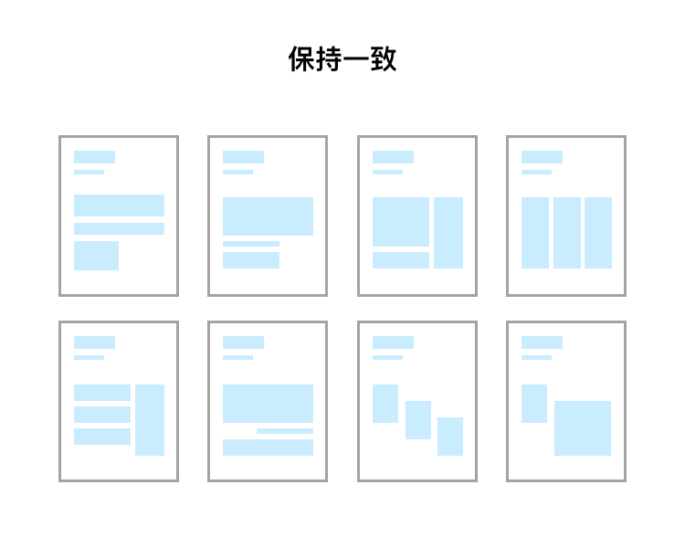
保持一致，成为「同一伙儿」
如图，即使只是页面左上角的元素保持了一致，也会有一种「他们是一伙儿」的感觉。当然，网格的保持一致只是一种体现统一的办法。统一感还可以体现在字体，颜色，间距，层级，对比等等的一致。总之，确定下来的规矩不要推翻且重复使用就可以了。
3. 最后，进行文字的编辑
至此，我们已经确定了页面的框架，具体的元素摆放。页面的排版非常确定了，接下来我们将对页面中的文字进行的细节上的修正。
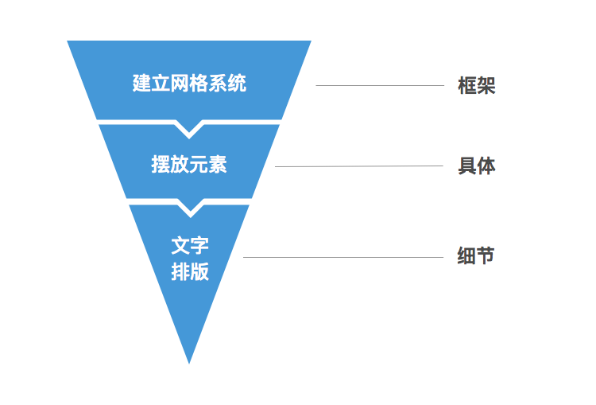
第三步，文字排版
既然排版是为内容服务的，那么其基本要求就是内容正确：不存在错别字，没有错误的标点符号，语法正确等等……在互联网时代，中文领域对于什么是「正确的排版」仍是百家争鸣，也有许多已经达成共识的东西，这里推荐两份很有建设性的排版规范：
1) 字号
字号是建立页面层级感的重要因素，所以不同层级的字号应当相差较大。比如标题字号 28pt，正文字号 10pt。在常见的屏幕尺寸或 A4 张上，字体正文可以使用 8pt 到 14pt。由于屏幕尺寸与具体场景遍数很多，字号设置并不是一个固定值，要根据具体的媒介尺寸，观察距离决定
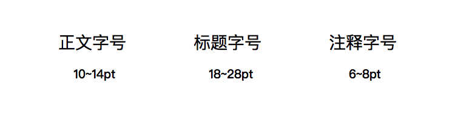
通常的字号设定
2) 字重设定
字重是字体的粗细程度。字重并不是我们自由决定的，只能选择字体提供的字重。对于段落设置，字重的设定决定了页面的「颜色」。字重粗的段落看起来比较黑，阅读压力较大；字重细的段落看起来比较灰，没有黑色那么有吸引力。
你可以想象这篇专栏页面的设计者一样，使用「常规体」「Normal」「Regular」作为正文字重；对小节标题加粗；标题加粗或变细以形成对比，制造层级感以明确逻辑关系。
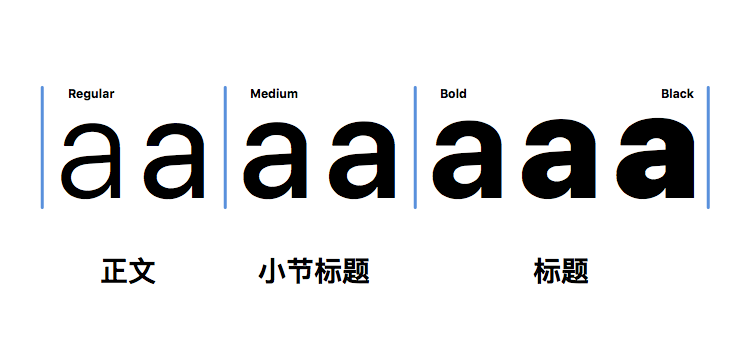
字重设定
3) 行长与栏宽
在中文和英文的语境中，人们已经习惯了从左到右从上至下的阅读方式，每到行末，我们的眼睛自然跳到了下一行。如果行长过长就会让阅读者换行困难，造成换错行，换丢行的问题；行长过短则会让换行频率过高，减慢阅读速度以及对整句的理解。英文语境下的理想行长是 9 个单词左右，中文语境的理想行长是 38 字以内。
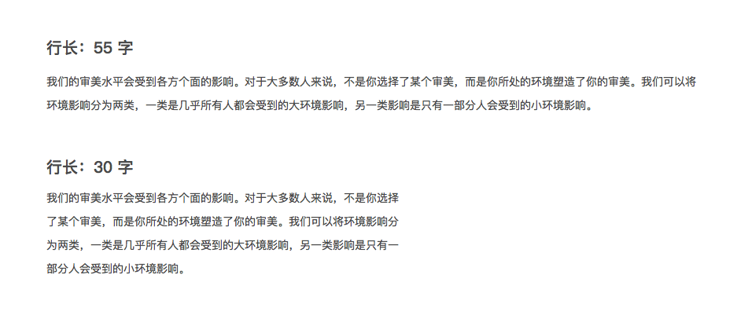
行长对比
需要提示的是：因为段落是被放置在网格里的，所以行长受到了栏宽的限制，要协调好两者的关系。你可以创建更多栏，或让段落横跨多个栏。
4) 字距与行距
字距一般无需调整，字体已经给设置好了。而行距则讲究合适，行距过大显得松垮，行距太小显得太密集。不过行距设定比较好掌握，通过肉眼就能轻松看出来，调整到合适即可。大行距可以显著降低读者阅读速度，比如给诗歌排版时可以加大行距来创造节奏感。
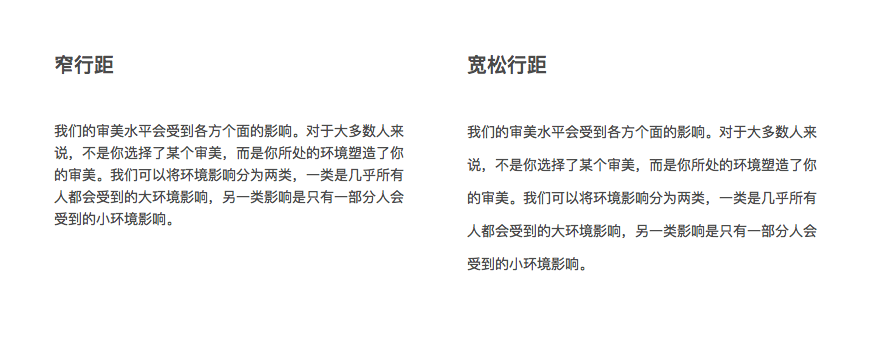
宽松行距可以给人更加轻松的阅读体验
我个人比较推荐较为宽松的行距，原因有二：首先，电子屏幕已经成为了我们的主要阅读介质，纵向无限延伸的浏览方式让行距不再会有「一页能放下的字太少了」的顾虑；其次宽松行距能显著减少阅读压力，在这个压力不断增加，屏幕阅读时间越来越长的时代，「轻松阅读」可能是最友好的排版设计了。

最终完成版
处理好了对文字的，我们共同完成了对这页专栏页面的分析与重构。从头到尾我们经历了如下的步骤：
- 构建网格系统
- 确定页边距
- 创建栏与行
- 摆放元素
- 把元素理解为矩形
- 使用距离表现关系
- 使用层级表现逻辑
- 保持排版一致
- 文字排版
- 内容审核（如标点符号，大小写）
- 字号调整
- 字重调整
- 行长调整
- 行距调整
相信你已经对排版的流程有所了解，并且有能力判断哪些作品使用了网格设计系统进行设计。你可以用同样的步骤应对其他排版任务，高效的同时也保证了质量。
推荐阅读
本章主要介绍了网格设计系统，给大家推荐一本更加深入的书籍，还有一篇扩展性的文章。
《平面设计中的网格系统》
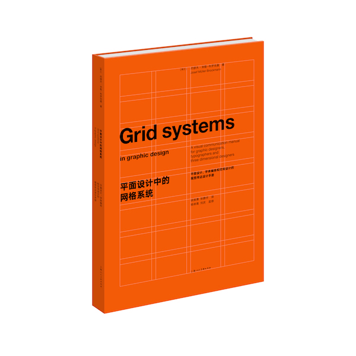
本期主要介绍了排版的目的以及一种世界普及的模块网格设计系统，如果你想进一步了解网格设计系统，可以阅读瑞士著名平面设计师、网格设计倡导者 Josef Müller-Brockmann 的经典著作《平面设计中的网格系统》。
The Secret Law of Page Harmony
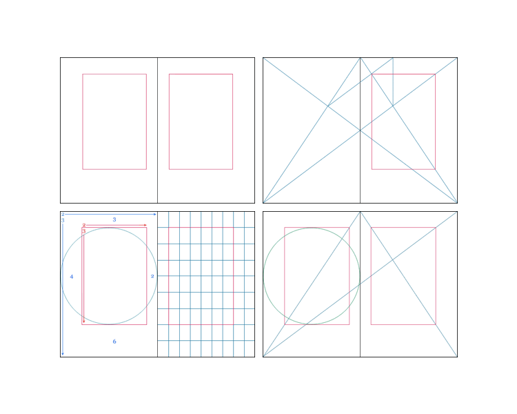
文章中介绍的各类网格
结语
在本章的尾声，我给大家布置一个长期的作业。作为练习，建议大家去观察身边的书籍、网页以及 App 的界面，你会发现他们大多数都在使用网格设计系统。那么，他们的网格具体是什么样子呢？留白多大？有多少栏？试着分析他们的网格。
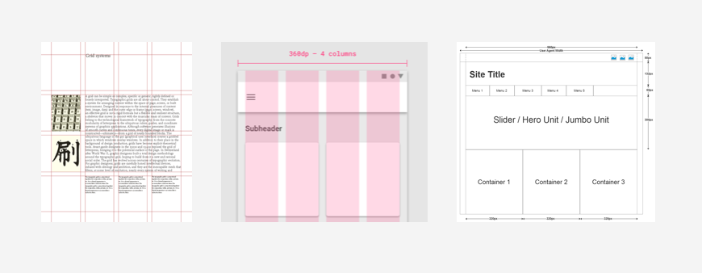
网格设计系统在印刷品、App、网页设计中的应用
至此，你已经学习了本栏目所有平面设计的理论知识，接下来我们会从软件知识开始，了解一些更偏实践的知识，以免真正设计时无从下手。感谢你的学习。
上一期
下一期
精选评论（0） 我的评论